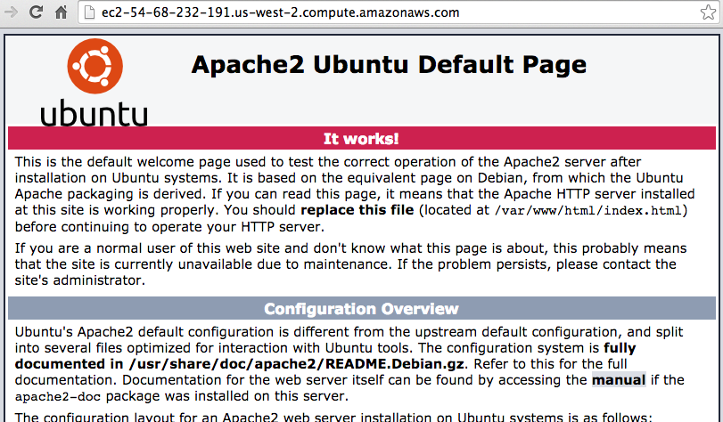
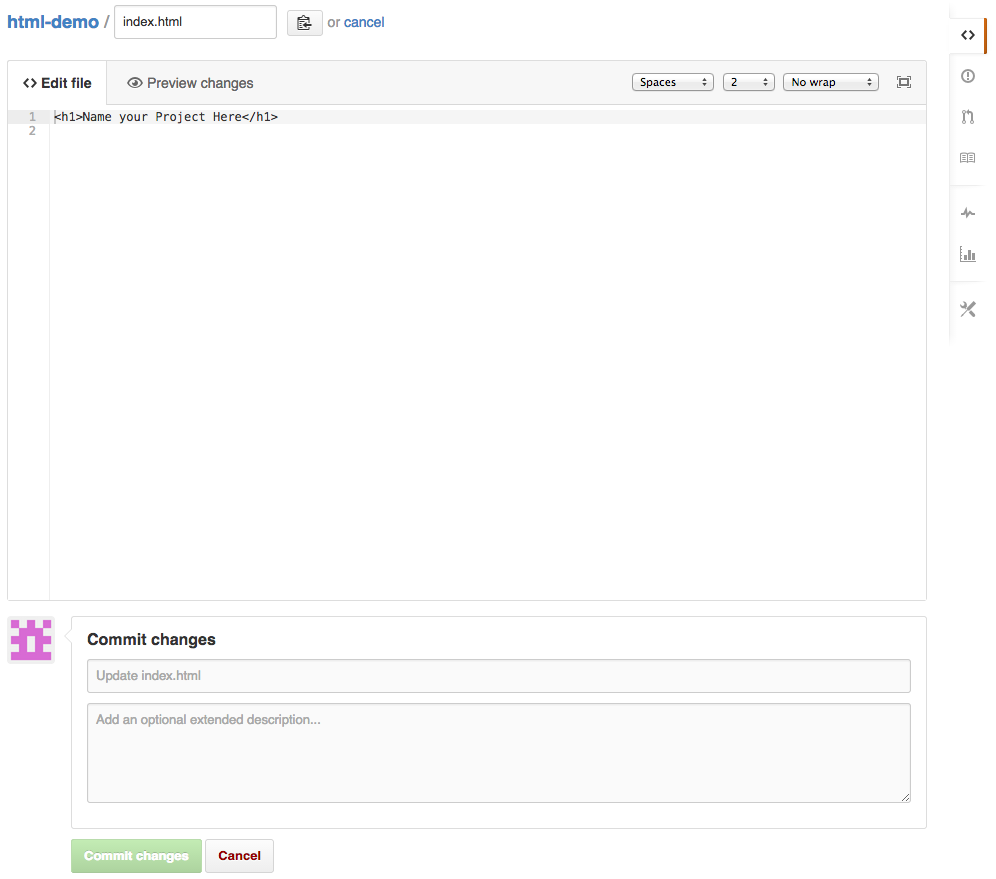

This lesson will make a web application server which is publicly accessible. Servers are made publicly accessible through a public IP address, and optionally, a DNS entry pointing to the IP address.
Tip
The usual way to browse the web is to type website domain names for addresses, relying on DNS to translate the domain name to the server’s public IP address. but you can also visit a site by going straight to the IP, skipping DNS.
We can visit our server at:
http://54.68.232.191/
or
http://ec2-54-68-232-191.us-west-2.compute.amazonaws.com/
or
http::/ec2demo.aaltsys.info/
The default Ubuntu Apache installation’s welcome page should display. Apache is the webserver software which directs web requests to our application.
As this page explains, it is located in the /var/www/html folder on the server. This folder is known as the DocRoot.
The file itself is called index.html. When Apache gets a request for a folder path, it looks first for an index.html file in that folder, and serves that file if it exists.
In order to see our own files, we should place them within the DocRoot. So, the process of deployment will require us to move our code to within the DocRoot on the server.
* change to AAltsys account *
In the web browser, login to your Github account. Fork the project from https://github.com/aaltsys/html-demo. After forking the project, Github will take you to the GitHub page for your fork.
In GitHub, edit the index.html file, enclosing your name in the <h1> ... </h1> tags.
Commit your changes.
After you have finished editing and committing the index.html file, click the html-demo link at the top of your page to return to the main page for your fork.
In the right sidebar, copy the URL of your repository to clone from (HTTPS version) into your clipboard. (For example, https://github.com/AAltSys/html-demo.git)
SSH to the server:
ssh developer@ec2demo.aaltsys.info ; # or ssh developer@54.68.232.191
password: techC@mp
Using [your-Github-id] as [your-directory-name], create a unique directory in the DocRoot:
cd /var/www/html
sudo mkdir [your-directory-name]
Clone to your directory, pasting in the correct URL for your Github repository fork:
sudo git clone https://github.com/[your-Github-id]/html-demo.git [your-directory-name]
View your page at:
ec2demo.aaltsys.info/[your-directory-name]
For example:
http://ec2demo.aaltsys.info/html-demo
The DIY approach to deployment isn’t bad for management. But there is a one-to-one relationship between the code repository and the public server, with no provision for testing, staging, and so forth. For a full-fledged code application, DIY leave some things to be desired:
So click Next to go on to a more advanced approach to application deployment.